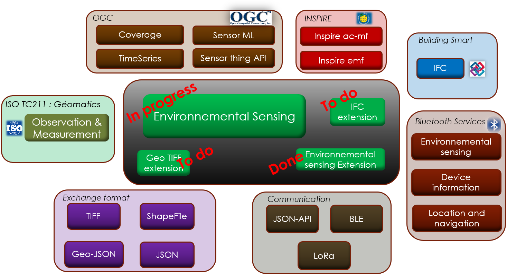
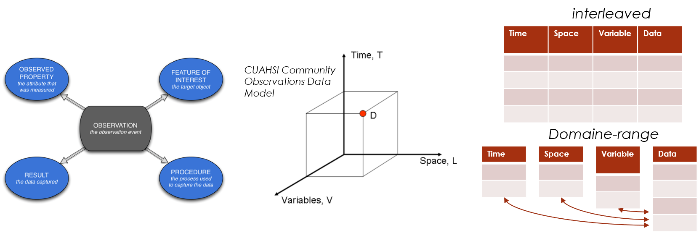
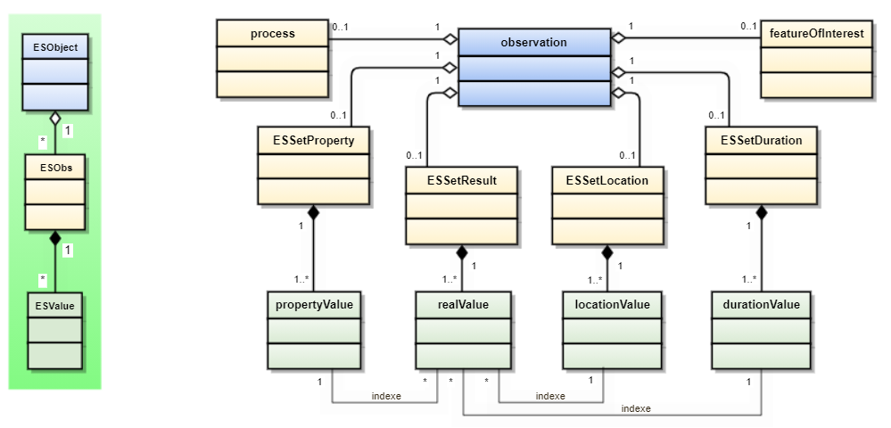

Package ES
Created on Fri Dec 24 15:21:14 2021
@author: philippe@loco-labs.io
Observation and Measurement
The ES (Environmental Sensing) package is built around the concept of Observation as define in the ISO-19156 "observation and measurement" :
"This International Standard defines a conceptual schema for observations, and for features involved in sampling when making observations. These provide models for the exchange of information describing observation acts and their results, both within and between different scientific and technical communities."
What is Environnemental Sensing project ?
The ES project is an implementation of the Standard :
- A data model that makes it possible to represent elementary observations (a simple one-off measurement), complex observations (multi-dimensions), detailed levels of representation (for example, the evolution of a plume of smoke).
- Data formats adapted to interfaces (binary payload for networks, json for requests or for NoSQL API, files)
- A library of connectors for different uses (sensors, database, storage, networks, etc.) in différents languages (python, C++)
- Bidirectional interfaces to data processing tools (eg Numpy, Xarray, GIS).
It allows to :
- Facilitate the use and sharing of environmental data
- Standardize both data acquisition equipment (sensors) and processing applications,
- Implement a software architecture replacing all coding / decoding operations (interfaces) by the use of standard connectors,
- Respect and rely on the main existing standards
- Collectively share and develop a set of open-source connectors responding to all situations (platform)
Main principles
Observation standard
The existing standards are incomplete and sometimes incompatible. They only cover part of the subject and most often remain at a syntactic and non-semantic level. The proposed data structure is based on existing standards that it complements by ensuring convergence:

Data structure
An Observation is characterized by:
- "observed property": the observed property,
- "feature of interest": the object (most often a location) of the observation,
- "procedure": the information acquisition mode (sensor, model, etc.)
- "result": result of the observation or the measurement
The result is a set of values referenced according to the 3 dimensions:
- temporal,
- spatial,
- physical (observed property)
It can be converted into a 3-dimensional matrix, each result being indexed by temporal, spatial and physical values.

Note: This “domain range” indexed representation is preferred to an “interleaved” tabular representation which associates temporal, spatial and physical values with each value of the result. Common properties (indicators) are associated with each Observation. They allow processing to be performed on Observations without having to know their composition (eg bounding boxes, type of observation, volume, etc.).
Index
Dimension
Json interface
Binary interface
Bluetooth mapping
Xarray mapping
Data model
An Observation is an object representing a set of information having
spatial and temporal characteristics associated with measurable or observable
properties.

What are the ES classes ?
The ES functions are divided according to the class hierarchy below :

Modules contain the following classes :
- ESObservation :
Observation, - ESValue :
DatationValue,LocationValue,PropertyValue,ResultValue,ESValue,ESIndexValue,ESSet - ESElement :
ESElement,ESObs,ESObject. - ESObs :
Location,Datation,Property,Result,ESSetLocation,ESSetDatation,ESSetProperty,ESSetResult, - ESconstante :
Es.
Expand source code
# -*- coding: utf-8 -*-
"""
Created on Fri Dec 24 15:21:14 2021
@author: philippe@loco-labs.io
# Observation and Measurement
The ES (Environmental Sensing) package is built around the concept of Observation as define
in the ISO-19156 "observation and measurement" :
*"This International Standard defines a conceptual schema for observations, and
for features involved in sampling when making observations. These provide models
for the exchange of information describing observation acts and their results,
both within and between different scientific and technical communities."*
# What is Environnemental Sensing project ?
The ES project is an implementation of the Standard :
- A data model that makes it possible to represent elementary observations
(a simple one-off measurement), complex observations (multi-dimensions),
detailed levels of representation (for example, the evolution of a plume of smoke).
- Data formats adapted to interfaces (binary payload for networks, json for requests
or for NoSQL API, files)
- A library of connectors for different uses (sensors, database, storage, networks, etc.)
in différents languages (python, C++)
- Bidirectional interfaces to data processing tools (eg Numpy, Xarray, GIS).
It allows to :
- Facilitate the use and sharing of environmental data
- Standardize both data acquisition equipment (sensors) and processing applications,
- Implement a software architecture replacing all coding / decoding operations
(interfaces) by the use of standard connectors,
- Respect and rely on the main existing standards
- Collectively share and develop a set of open-source connectors responding to
all situations (platform)
# Main principles
## Observation standard
The existing standards are incomplete and sometimes incompatible. They only cover
part of the subject and most often remain at a syntactic and non-semantic level.
The proposed data structure is based on existing standards that it complements
by ensuring convergence:

## Data structure
An Observation is characterized by:
- "observed property": the observed property,
- "feature of interest": the object (most often a location) of the observation,
- "procedure": the information acquisition mode (sensor, model, etc.)
- "result": result of the observation or the measurement
The result is a set of values referenced according to the 3 dimensions:
- temporal,
- spatial,
- physical (observed property)
It can be converted into a 3-dimensional matrix, each result being indexed by
temporal, spatial and physical values.

*Note: This “domain range” indexed representation is preferred to an “interleaved”
tabular representation which associates temporal, spatial and physical values
with each value of the result. Common properties (indicators) are associated
with each Observation. They allow processing to be performed on Observations
without having to know their composition (eg bounding boxes, type of observation,
volume, etc.).*
## Index
## Dimension
## Json interface
## Binary interface
## Bluetooth mapping
## Xarray mapping
# Data model
An `ES.ESObservation.Observation` is an object representing a set of information having
spatial and temporal characteristics associated with measurable or observable
properties.

# What are the ES classes ?
The ES functions are divided according to the class hierarchy below :

Modules contain the following classes :
- ESObservation : `ES.ESObservation.Observation`,
- ESValue : `ES.ESValue.DatationValue`, `ES.ESValue.LocationValue`,
`ES.ESValue.PropertyValue`, `ES.ESValue.ResultValue`, `ES.ESValue.ESValue`,
`ES.ESValue.ESIndexValue`, `ES.ESValue.ESSet`
- ESElement : `ES.ESElement.ESElement`, `ES.ESElement.ESObs`, `ES.ESElement.ESObject`.
- ESObs : `ES.ESObs.Location`, `ES.ESObs.Datation`, `ES.ESObs.Property`,
`ES.ESObs.Result`, `ES.ESObs.ESSetLocation`, `ES.ESObs.ESSetDatation`,
`ES.ESObs.ESSetProperty`, `ES.ESObs.ESSetResult`,
- ESconstante : `ES.ESconstante.Es`.
"""Sub-modules
ES.ESElement-
Created on Sun Aug 1 13:24:02 2021 …
ES.ESObs-
Created on Tue Aug 3 23:40:06 2021 …
ES.ESObservation-
Created on Tue Aug 3 23:40:06 2021 …
ES.ESValue-
Created on Mon Aug 2 14:51:23 2021 …
ES.ESconstante-
Created on Sun Aug 1 13:35:28 2021 …
ES.EStestunitaire-
Created on Sun Aug 1 22:05:08 2021 …